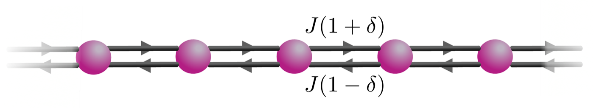

Assistant Professor of Physics · Quantum Theory Group
Dipartimento di Fisica e Chimica – Emilio Segrè, Università degli Studi di Palermo
I am a theoretical physicist working on open quantum systems: light and matter coupled to structured environments, described by effective, often non-Hermitian, Hamiltonians.
My research spans non-Hermitian physics, waveguide quantum electrodynamics and giant atoms, topology, and open many-body systems. Before joining Palermo I was a Fulbright Research Scholar at Columbia University and a postdoc at the University of Luxembourg and the Max Planck Institute for the Science of Light.
Every quantum system is, to some extent, open: it exchanges energy, particles and information with its surroundings. I am interested in the new physics that emerges from this openness and in how it can be engineered. My work sits at the interface between quantum optics, open quantum systems and condensed matter.

From Roccati, Phys. Rev. A 2021
Non-Hermitian physics & open quantum systems
Non-Hermitian Hamiltonians provide an effective description of open quantum systems, for instance of Markovian dynamics conditioned on the absence of quantum jumps. They host phenomena with no Hermitian counterpart, such as exceptional points, where eigenvalues and eigenvectors coalesce, and the non-Hermitian skin effect, where an extensive number of eigenstates accumulates at the boundaries. I am interested in the physical origin of these effective descriptions, in their relation to the full master-equation dynamics, and in the consequences of non-Hermiticity for spectra, eigenstates and quantum correlations.
Waveguide QED with non-Hermitian & topological baths
In waveguide QED, quantum emitters coupled to a common photonic bath interact by exchanging photons. These photon-mediated interactions inherit their range, symmetry and (non-)reciprocity from the bath, so that engineering the bath amounts to engineering an effective Hamiltonian for the emitters. I am interested in what happens when the bath is non-Hermitian, as in lossy photonic lattices, or topological, and in how non-reciprocity, exceptional points and topology are transferred from light to matter. More broadly, I study structured baths beyond the standard periodic waveguide, such as aperiodic and interacting photonic lattices.
Giant atoms are quantum emitters coupled to light at several, possibly distant, points, a regime realized with superconducting circuits coupled to microwave waveguides or surface acoustic waves. Interference between the coupling points and the time delay between them make giant atoms a versatile building block for quantum simulation and quantum networks, with frequency-dependent couplings, decoherence-free interactions and non-Markovian dynamics. In particular, I study chiral giant atoms, where complex coupling phases break time-reversal symmetry, and how chirality can be used to control their dynamics.
In closed quantum systems, interactions and disorder give rise to quantum chaos or many-body localization, diagnosed through spectral statistics, eigenstates and dynamics. I am interested in how these concepts extend to open many-body systems: how dissipative quantum chaos and localization can be characterized, which spectral and dynamical signatures remain meaningful when the generator of the dynamics is not Hermitian, and, more broadly, how interactions and non-Hermiticity interplay.
COST Action CA24109: Many-body Open Quantum Systems (QOpen)
Science Communication Coordinator · 2025–2029 · cost.eu
Supervision
F. Salvado Dias, pre-doctoral student (QOMBE) Main supervisor, since 2026
PhD students Co-advisor, since 2025
G. Musolino (University of Messina)
F. Bönsel (Max Planck Institute for the Science of Light, Erlangen)
G. L. Sferrazza (University of Palermo)